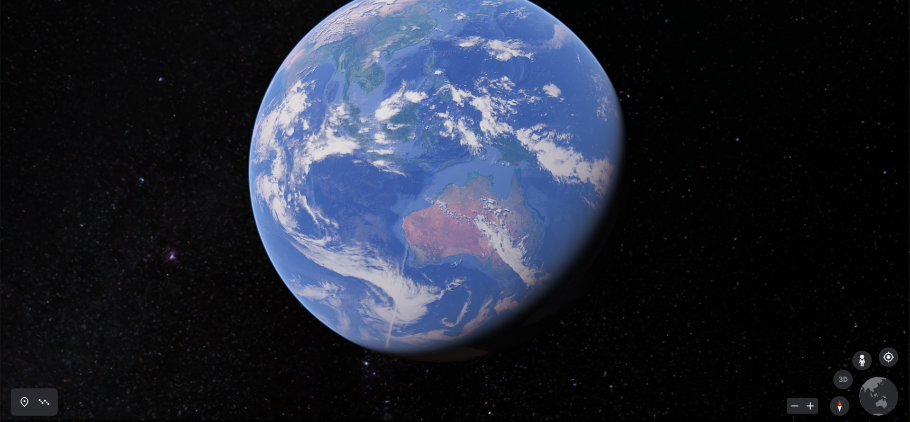
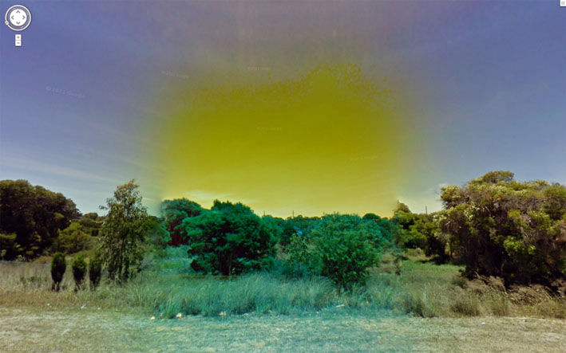
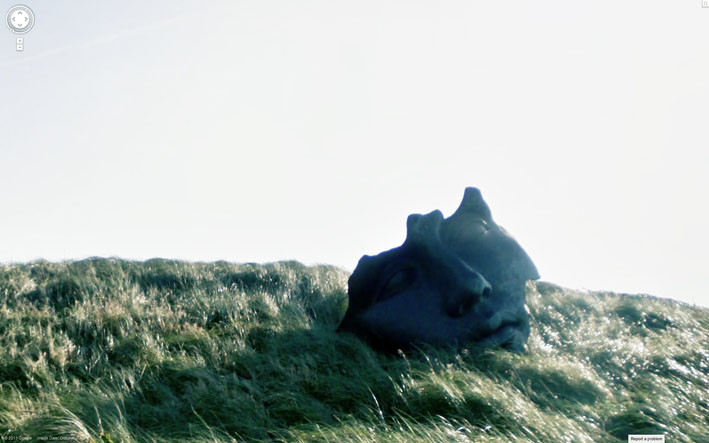
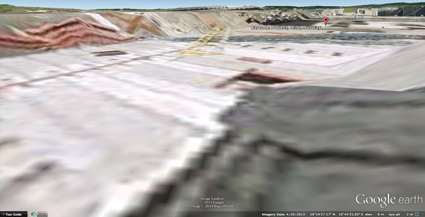
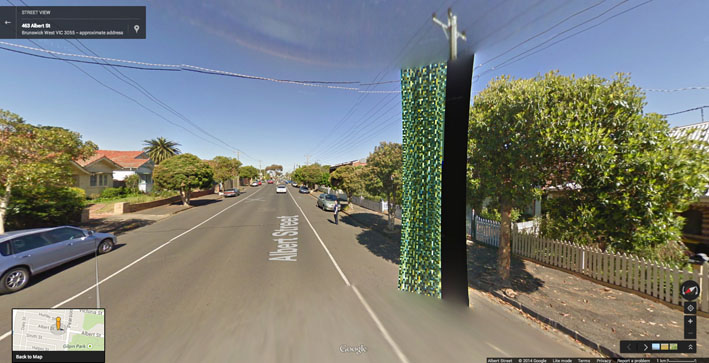

Journey To The
Centre Of
Google Earth.
Google Earth, 2020.
Words by Simon Sellars
Essay was originally commissioned and published by
Only Connect Festival Sound. June 22, 2014.
“We want to create a digital mirror of the world.” Google Earth Outreach geo-strategist Karin Tuxen-Bettman.
When you open Google Earth, it settles at the default elevation of 11,000 km above the planet. The effect is tranquil, partly from the soft-glow space panorama and partly from the sense of disengagement. The crystal-clear imagery, supplied by NASA, depicts the world in a photoreal representation. It is the ultimate expression of what cartographers call the God’s-eye view: the desire for absolute visual objectivity in maps, presenting every region of the globe in its proper place.
But maps lie. They naturalise the planet’s boundaries and endpoints in ways that serve ulterior motives. The most popular map of the world, the Mercator projection, is a cartographic model of reality founded on a blatant misrepresentation. In the Mercator world, countries are not relative to each other. The sizes of North American and European countries are wildly inflated, while those of third-world nations are greatly diminished. During the 1970s and 80s, the so-called “map wars” were fought, during which a new map, the Gall-Peters projection, was pitted against the Mercator, which stood accused of being a repressive symbol of Eurocentric colonialism. Google Earth is more than the God’s-eye view – more than just us mortals seeing through the eyes of God. In Google Earth, we are God. We see over, under, inside and out. We see into the beyond, with a second sight unavailable to our mortal selves. We see ghosts of dead friends and dead strangers.
We see ourselves. If the colonial God’s-eye view in Mercator maps is an uneasy settling of the planet (hoping the savages will stay in their place and not upset the prescribed order), then Google Earth, with its forking paths Google Maps and Google Street View, is a parallel world bleeding into this one.
“Copyright traps” are fake features cartographers insert into maps to catch plagiarists. If the map is copied and published without permission, it can be traced due to the inclusion of a street leading in the wrong direction, or a building that doesn’t exist. In Street View, such impossible objects are a matter of course. Google boundaries are porous. They dissolve. I have never seen anything so beautiful in all my life as the melting freeways of the USA, the next nature of glitched-out Google projections. In Google Earth, images are spliced together, taken at different times of day. Sometimes you can see the joins, where the process hasn’t fully knitted. It might be an RGB-separated cloud of light surrounding an object, or a pink-yellow pixel-glitch tornado rising to the sky. Sometimes in Street View, if your connection is slow, when moving through a city, the interlacing mechanism is revealed. You can see the front of a building sliding in over the background, compressing the architecture into a narrow band of light so that it appears to be a paper-thin facade slipping into place. Reality becomes a stage set, the scenery changing before your eyes.
"The Google camera sees
everything, even that which
is invisible to the naked eye."

Los Angeles: the melting freeways of the USA. Archived image from Clement Valla’s Postcards from Google Earth.

Archived image from Jon Rafman’s 9 Eyes project.
Sometimes, the Google Earth algorithm maps one texture over another to produce beguiling landscapes. A freeway overpass, suspended high above the ground, follows precisely the undulating terrain of a large valley, producing a contorted, fluid road system from another dimension. Clouds smear over the contours of a mountain, like a form-fitting, fluffy white blanket. Skyscrapers are laid flat against the ground, yet, impossibly, impart a three-dimensional sense of height. Google Earth is a digitised Mercator, squashing disproportionate dimensions into a totalising system with its own internal logic (Google Maps are actually based on a Mercator variant). When Apple’s iPhone maps also began spewing out strange new topologies at a rapid rate, the company was roundly mocked, yet I thought them immensely poetic, a world I would very much like to live in: Steve Jobs’ reality distortion field.
As a child, I was fascinated with world maps, which were always Mercator. It wasn’t until my teenage years that I realised Greenland was not twice as large as Australia, as the Mercator projection asserts, but that Australia in reality was three times larger than Greenland. My daughter is two years old and already fascinated with my iPhone, which often displays Google and Apple maps, following my obsession. Perhaps she will spend the next few years thinking it’s entirely natural for freeways to dip and bend across the landscape like straps of liquorice. Google Earth may be a digital Mercator, but it does not lie. It has no need. It lays everything bare and it can afford to, for its weapon is seduction.
The Google camera sees everything, even that which is invisible to the naked eye. Recently, Luboš Motl, a Czech blogger, wrote about how he would feel an uncomfortable tingling in his buttocks, like many ants stinging him, when riding his bicycle under certain power lines. He noted that his bicycle seat has a hole in it, revealing exposed metal just a few centimetres away from his body. Combined with his sweat from the bike ride, he surmised that he must have been conducting an unusually high electrical field through his body generated by the power lines. He posted screen grabs from Street View that appeared to confirm this hypothesis. The images displayed bright cyan and pink clouds following the power lines under which he rode, presumably a revelation of the supercharged electromagnetic field that had infiltrated his being with such a baffling sensation.
Unsurprisingly, Street View even sees ghosts. Inside this strange mechanism, I flick a switch and zoom in to my childhood home, which I sold recently after my parents were taken ill. I look into our former backyard and see my father there. I try to get closer but I am repelled by the absolute limits of the zoom function. Dad’s face is duly blurred but he is walking purposefully. There is no sign of the broken hip that made him reliant on a walking frame, no sign of the rapidly advancing symptoms of dementia that now afflicts him. He is frozen in time-sickness. As I advance to the next frame, his pixels are squeezed through an interlaced crack in the algorithm. I am lost between worlds, like a louse trying to find a crack of daylight in a crumpled bed sheet. Everything passes through us now: electromagnetic waves; tweets bouncing from mobile phone towers through our bodies; images of our dead and dying loved ones. The machine teaches us how to remember.
I float in space, watching the Earth from 11,000 km out, the God’s-eye view. Greenland, Iceland, Denmark, Norway, Sweden, Finland… pinpricks of light on the Google projection. They are all linked in my mind. Ever since I was a child, I’ve always wanted to visit Northern Europe. There is something about the landscape that inspires great wonder in me. Perhaps it was that childhood perception of Greenland as this enormous, mythical landmass, even bigger than Australia, almost completely filled with ice and snow. Now, I have the chance. My first stop is Norway. I patch into the console and spiral down into the ground, into Oslo’s Bjørvika district and the Barcode Project, the controversial high-rise redevelopment in a former docklands area.
I have a Norwegian friend, and she tells me the Barcode Project represents a city in a permanent state of near future, convenience hardwired into its new building projects at the expense of conservation; a new-rich decadence. The Barcode is a Ballardian development, she suggests, reminiscent of the worlds of J.G. Ballard, especially his novels Cocaine Nights and Super-Cannes, which document urban decadence hidden behind sleek architecture, powered by a deviant human psychology mutated by technological systems. Soon I will be in Oslo in real time, in the real world, to give a talk on Ballard, surveillance culture and cinema. Then, I will be able to test my contact’s hypothesis for myself, but for now all I have to see with are my Nine Eyes.
Street View cars take panoramic images of streets around the world, which, when stitched together, provide the software’s immersive digital landscape. The cars have nine camera lenses affixed to a pole on the car’s roof: the “Nine Eyes of Google Street View”, a term coined by artist Jon Rafman. This allows the Google perspective to be truly wraparound: over, under, inside, out. Nothing escapes this 360-degree gaze. Not a startled deer running down a highway. Not a boy in full clown costume performing a hold-up. Not a grieving woman kneeling by the side of an overturned car. Not a girl sitting in the middle of a road, her possessions strewn around her. All are past or present images frozen in Street View; some remain, some now erased.

World War Two bunker (Atlantic Wall). Google Earth, Ostend, Belgium, 2009.

Archived image from Jon Rafman’s 9 Eyes project.
Accidents, robberies and moments of intense human drama sit side by side with tableaux of industrial stillness. A boy dragged down a dirt road by masked men is photographed with the same dispassionate perspective as a cow shepherded through a gate. Or a World War Two bunker overlooking a seaside road in Belgium, or a massive Zardoz-style facemask buried in the green countryside. A glitch in the imaging system – a radioactive-bomb-burst of sickly digi-yellow, overlaid in error on a field of sublime green – is rendered with the same objectivity as moments of stunning natural beauty: a golden sunrise so unreal it’s like a Martian horizon. But “Nine Eyes” is also the name given to the once-covert international surveillance arrangement, in which eight Western democracies agree to share signals intelligence with the US – not just telephonic monitoring, but, as we now all know post-Snowden, all-invasive internet spying. I watch Oslo through the Nine Eyes of Google. The NSA watches alongside me. With me. Inside me. I see the world with eighteen eyes.
In 2008 and again in 2012, the Street View car captured artist Carlos Zanni in Milan. He converted these shots into artworks: Self-Portrait with Dog (2008) and Self-Portrait with Friends (2012), the “self-portrait” conceit giving the illusion he had control over his dual appearance on the Google stage. But, as he says, “It was just luck. I had no control.” Street View has moved on. Zanni’s website still links to the spot where he was first captured by Google, but he no longer appears: the image database has been updated. There is now just an empty pavement and a blank wall. Because of this, Zanni thinks Google is building a “time machine” that will allow us to see cities unborn. He believes Google has been saving and storing Street View layers since the project began in 2007, with the aim of eventually allowing us to traverse a particular area back in time. In the near future, a version of me will browse the Barcode Project, reducing the opacity of the various layers of time stacked on top of each other, allowing the earliest ones, the girders and steel of the unbuilt Barcode high-rises, to fade away and gradually take flesh as their blue-and-green pixelated facades slide into view.
People are waiting to live and work in the Barcode Project. In fact, they are already there, we just can’t see them yet – the layer is hidden. Photoshop tools. Deselect the eye symbol. I can’t see the layer anymore. I can’t clone the layer. I feel disorientated. Something’s not right. I can see the joins. They don’t match. There is no synergy, no match between the old and new. I can’t gauge it. The scale is wrong. I try to get closer to two women walking past the Barcode construction zone but they literally disappear before my eyes the closer I get. The connection is lost. I am two frames into the future, and there are no people in the Barcode Project. Only strange shapes and weird colours.
I’m inside this bizarre machine again, and I turn around. I let it turn me around, and I see a low-slung underpass, an isosceles triangle of light next to Rostockergata, the main street lining the construction zone. In this crack between worlds, I see layers of history, discarded and forgotten. Reams of graffiti, old soup cans, a smashed TV set, a disfigured bicycle, torn paper, mattresses. I see two young men, one bearded, the other wearing a hoodie, immersed in conversation, squatting behind a pile of rubble. I must look closely to see them, zooming in at the maximum. None of this exists now in reality, not in these coordinates; the images are datestamped “2009”. When I first tried to find information on the Barcode Project, I Googled “Rostockergata”. The first result was an entry on Wiki Maps: “This place was deleted. It will be removed from all search engines in a few weeks.” It is an appropriate requiem. I found a Norwegian blog that mourned the loss of Rostockergata’s old waterfront character, paved over by the shiny new Barcode reality. In the comments, a reader wrote: “Rostockergata forsvinner ikke! Den skal reetableres mellom Dnbnor byggene i Barcoderekken.” Using (what else?) Google Translate, I understood this to mean: “Rostockergata can live: just relocate it in the sliver of space between the Barcode buildings.’ There, it will be resurrected as an historical simulacrum, flat and substanceless.
In the construction zone, on the green-and-blue facade of the PricewaterhouseCoopers building, I see fake perspective tricks worked into the building’s skin. This type of game is always a con, a way for architects to ignore the lived experience of a city by focusing attention on the bling of a building. Pure illusion. It does not reflect reality, only itself, like two mirrors distorting each other into infinity. In Melbourne, where I live, there is a similar development, the Docklands Precinct (or “Shocklands”, as I prefer it). Like the Barcode Project, it’s a redeveloped industrial waterfront area in the city centre. Like Barcode, its buildings are designed so close to each other they create narrow passages between them. Urbanists call such spaces SLOAP: Spaces Left Over After Planning. The Shocklands are hostile to urban life and human scale. The SLOAP there forms hyperactive wind tunnels that repel all street-level activity through constant wind motion and noise. Instead of designing sites for public interaction from the start, the SLOAP is what we get, and the architects can always claim: “There is your public space.”
When work started on the Barcode Project, the remains of nine wrecked ships were discovered, dating from the early 16th century. No trace of this history remains in the new buildings, except that tangentially aquatic blue-and-green palette. In the Shocklands, the old maritime culture is reduced to the shape of a row of high-rises designed to look like the prows of ships, or abridged with fibreglass anchors, rope and sailor caps decorating the shells of plastic cafes and restaurants. These establishments are named to provide the final touches to a copy of an original that never existed: Capn’s Cafe; Steam Packet Restaurant; Mariners Tavern. This is the ultimate expression of the terminal logic suggested by the Rostockergata blog. Let’s call it “zombie urbanism”: what happens when an area of urban life is killed off then reanimated under external control (following the old-style zombie trope, whereby the dead are woken from the grave and controlled by witch doctors). What made the area vibrant in the past is sucked out and re-injected into a distortion of its former self. The old way of life is remaindered. The old buildings that could be salvaged are completely gutted, surviving in traces as a grotesquery.
"No one visits for anything but shopping
or sleeping in airlocked apartments after work".
Buildings face away from the sun, and the “instant city” effect creates cold, empty streets that go nowhere, or have no organic relationship to the buildings that have been erected. Streets exist only to separate buildings. The main human functions are spending and excretion: no one visits for anything but shopping or sleeping in airlocked apartments after work. It’s pure Ballardian terrain, such as you might find in Super-Cannes, about a high-tech gated community where the architecture controls how the inhabitants think and behave. “Thousands of people live and work here,” Ballard writes, “without making a single decision about right and wrong. The moral order is engineered into their lives along with the speed limits and the security systems.” As in zombie urbanism, in Super-Cannes’s ultra-modern community “a lack of intimacy and neighbourliness” is replaced by an “invisible infrastructure that takes the place of traditional civic virtues”. According to Clement Valla, who collects unnatural Google images in his online archive Postcards from Google Earth, the glitches causing the landscapes he finds (such as the aforementioned bendable freeways) are not errors but logical to the system, which is only doing what it has been programmed to do: ceaselessly recombine dynamic data to provide seamless illusions of continuity. So, too, are the effects of zombie urbanism.
Recent research by environmental psychologists describes how architects see the world, and it does not match what laymen see. A term has been coined to describe this: “architectural myopia”, whereby the architect is trained to look for different qualities in the environment to non-architects. Instead of harmonious relationships and contextual essentials, architects see objects removed from context, nothing but abstraction and attention-grabbing elements. This matches the logic of a world completely given over to surface, surrendered to machines. In that crack, that portal, between the Rostockergata underpass and the construction zone, I see all of this. Street View does not lie. When I arrive in Oslo to give my talk, I will compare the city to what I’ve seen inside the machine, for I have seen Oslo already. It is imprinted on me, overlaid. It has augmented my reality, merged with my childhood dreams of Nordic Europe. I am already there. I never left Oslo. I have never been to Oslo but it fills me with déjà vu. By the time of my arrival, the Barcode Project will have advanced further, bearing little relationship to the under-construction Street View images of it I’ve come to know. My projections and prejudices will be sorely out of date. I will have to reassess the Project once again.
In my hotel room, overwhelmed and overloaded from living two realities at once (three, including the vagaries of childhood dreams), I will turn off the computer. The screen will turn black. It will be dark outside and the lights in my room will be off, but I will still be able to see the outline of my face in the monitor from the streetlights outside, for I can never unsee. Paul Virilio, urbanist and theorist of cyberculture, once told an interviewer about a science fiction story in which artificial snow was seeded with tiny cameras and dropped from planes. He explained, “when the snow falls, there are eyes everywhere. There is no blind spot left.” The interviewer asked: “But what shall we dream of when everything becomes visible?” Virilio replied: “We’ll dream of being blind.” Desperate, I will dream that same dream, but even gouging out my eyes – all eighteen of them – will not be enough, for the imprint will remain, the augmented overlay, glowing like tracer bullets in the radioactive darkness of the mind’s eye. Remember, I can never unsee.
Then I will dream of death, but even death won’t save me, for I will have left enough data, enough tweets, enough cookies and enough honey traps from my online browsing patterns to allow unscrupulous marketers to harvest the information and construct a digital version of me. It will be a magnificent feat of malware, social engineering composed of my online leavings. This digital construct will traverse the Google Earth just as I do now. It will spam my friends and family, and it will tweet the same observations about Street View as I do. Actually, not “the same observations about Street View as I do”, but “the same observations because it is me”. No one will tell the difference. In the future, we are all sentient spambots.
My digital doppelganger will see me in Google Earth, reflected in the hubcap of the Street View car. It will see me reflected in the illusory facade of the PricewaterhouseCoopers building, watching myself watching the Barcode Project. It will see me in the machine, which has taught me how to remember a past I never had and a future I will never see.
The machine will teach my doppelganger how to live, at the same time as it teaches me how to die. No one will tell the difference.

Oslo: through the eyes of machines. Google Earth, 2013.

Google Street View anomaly outside my home. Google Earth, Melbourne, Australia, 2009.